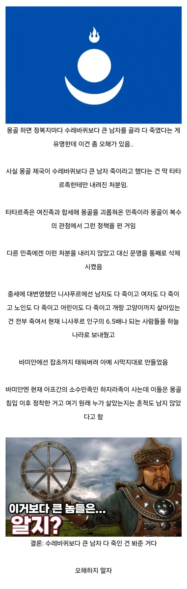

"다른 동네는 수레바퀴 안 했어요."

"다른 동네는 수레바퀴 안 했어요."
사이 나쁜 이웃사촌 프리미엄이 붙어서 애새끼들이라도 살려준거래.
죽였어요. 그냥 싹 다.
그냥 죽이기도 아쉬워서 황금을 녹여 식도로 내리붙기도 했고
귀향길에 개빡치게 만들었던 사우디 옛 왕조는 오아이스마다 있는 도시마다
점령하고 지쳐서 힘들어 처형도 힘드니
남자는 여자가 죽이게 하고 아이가 여자를 죽이게 하고 아이를 말로 으깨 죽였다네요.
칭기즈칸 : 서하인들을 모두 죽여 내 무덤에 바쳐라(실제로 한 말)
사절 보냈을 때 살려주세요 하면 살려주는거 아니였어??
보통은 살려주는데, 보통은 사절보내서 항복하셈 한다고 항복안하지
항복하면 봐줬다는데
사실 그냥 수틀리면 다 죽였음
항복해도 자원 다 빨아먹는데
그럼 고려는 얼마나 이쁨받은거냐
쿠빌라이 정통성 도박이었나 그거 성공해서 한탕한것도 있다고 들었음
딱히 몽골이랑 척진것도 없었을거고
고려는 엄청나게 후대받은편이지
고려는 기황후 보내서 보답함
송나라도 그렇고 약탈하기 쉬운 동방 식민지들은 머리만 제거해서
식물 인간 상태로 개조한다음 정기적으로 수탈하는데 써먹음
저 동네는 멀어서 관리하기 힘드닌까 걍 싹 죽인거
고려가 받은 특혜가 몽골이 생각하기에도 엄청난거라 쿠빌라이가 “우리한테 조공하는 나라가 80여 개국인데 내가 너네처럼 예로 대우해주는거 본적 있음?” 이라고 물어보기까지 함ㅋㅋ
얘네들이 진짜 찐 오랑캐임
하자라족 완전히 생긴 건 몽골리안이던데 옛날에 죽이다 지쳐서 쉬던 애들이 정착한 거 아닐까?
그럼 뭐 전멸이라도 시켰다는게냐? 네. ㅋㅋ
중국 북부도 초토화 시키자는 의견이 꽤 있었는데 세금 받는 게 낫다고 판단해서 그만둠 ㅋㅋ
다른데는 아예 말소를 시켰잔아...
우리 조상님들 진짜 외교 잘해서 다행이야..
몽골 아니였으면 이미 특이점 도달 했을까 싶다
근데 저게 맞음
괜히 싹을 키우지 말고 짓밟을거면 아예 소멸시켜야지
물론 졌을때 자기가 소멸당할 건 각오해야함
어설픈 폭력은 보복당하지
진짜 악마들이냐
그래도 사람인데 아이까지 죽이는데 반감 같은건 없었을까?
그 애 살려줘서 복수하고 큰게 징기스칸이자나
우리도 예방전쟁할때 따로 애들이라고 여진족 살려줬단 이야기 없지않나? 일본도 왜란때 성 하나 함락하면 남여노소 싸그리 다 죽였고.
바로 인접한 국가끼리는 투닥투닥 하니까 서로 증오하는 감정도 쌓여있을거고 상대국의 성장 여력 없애는 차원이라면 이해되지만 거리가 엄청 먼 나라 끼리면 교역에서 오는 이득도 무시 못할텐데 걍 싸그리 다 죽이겠다는 판단을 한다는게 좀 이해가 안 됨
유목민이라 기본적으로 소나 돼지 멱따고 배가르는게 기본이라 뭔가를 죽이는 거부감은 우리보다 훨씬 덜하겠지
야만의 시대에 그런건 사치잖아 그 애가 커서 나중에 어떻게 복수하려 들지 모르니까
만주족들이 그 원한을 기억했다가 청나라가 세워진뒤 일부러 몽골에 매독을 퍼트렸다며
결국 매독이 너무 퍼져서 꽤 타격이 컸다더라
수레바퀴보다 작으면 살려준다고? ㅁㅊ 혜자
와 진짜 몽골이 멸망 안당한게 신기함 ㅋㅋㅋㅋ
그때의 복수를 기억하는 인간들도 다 죽여서 그런가
복수의 순환을 만들질 않음ㅋㅋㅋ
살아남은 애들은 몽골이 공백지 왕창 만들어줘서 이득봤지
1000년전이지만 북한보단낫네 최근숙청할때 3대다죽이면서 2세 아기도 교수형시키더만...
사상검증)김정은 개새끼
본문보면 걍 싹다죽였다는건데 북한보다 더한거지
징기스칸이 좀 더 오래 살았으면 히틀러도 안 나오고 세계대전도 안 났나?
학교 역사 시간에 저 이야기 듣고 난 뒤로는 몽골이라는 나라는 뭔가 호감이 안가
나도 몽골이 지금은 엄청 약소국이 돼버린게 저때의 업보탓도 있다고 생각함
환경전사 징기즈칸님을 누가 음해하려하는가
말 그대로 ‘남녀노소‘를 다 절멸… ㄷㄷㄷ
차별없는 국가
고려는 대체
저게 그럼 오히려 자비로운 처사였다고?